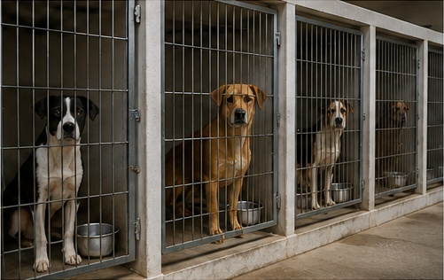
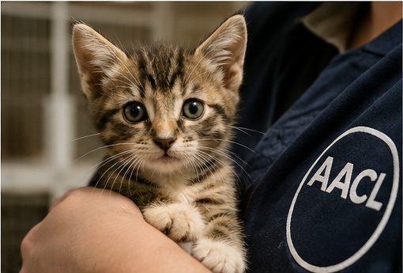
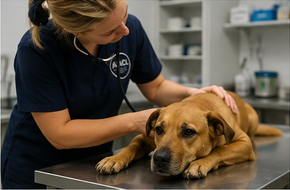
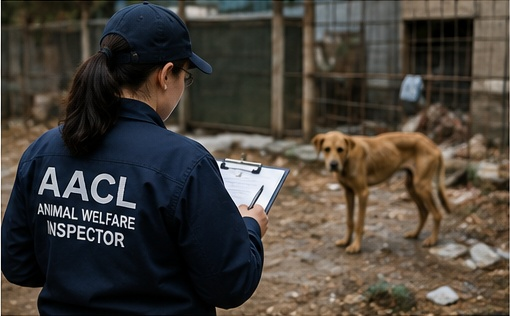
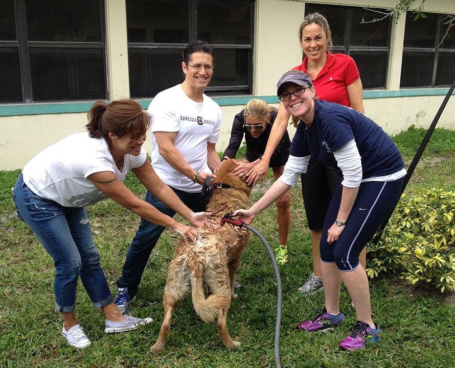
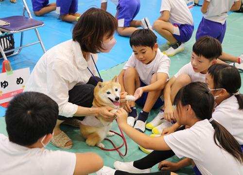

Animal Shelter
We provide shelter, food and care for animals that have been abandoned, surrendered or rescued.
Discover the services provided to protect and improve the lives of animals.

We provide shelter, food and care for animals that have been abandoned, surrendered or rescued.

Our adoption programme helps animals find suitable and loving permanent homes.

Veterinary services help provide animals with essential healthcare and treatment.

Animal welfare inspectors investigate reports of suspected cruelty, abuse and neglect.

Outreach programmes help communities gain access to animal welfare information and services.

Education programmes promote responsible pet ownership and better understanding of animal welfare.
Contact us if you would like more information about our services.
Make an Enquiry